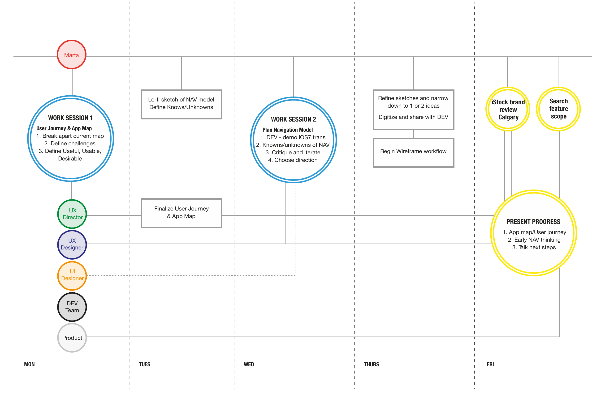
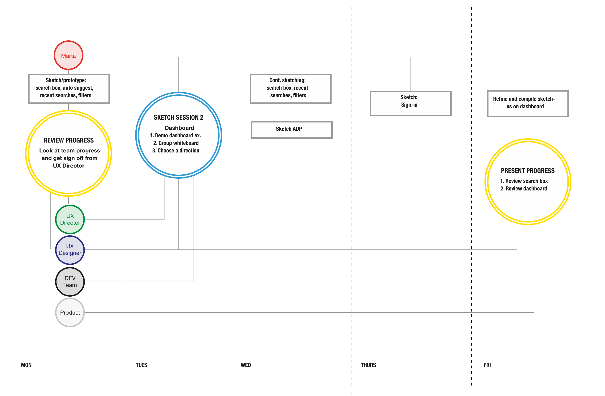
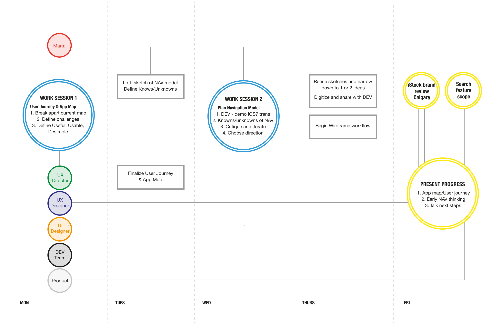
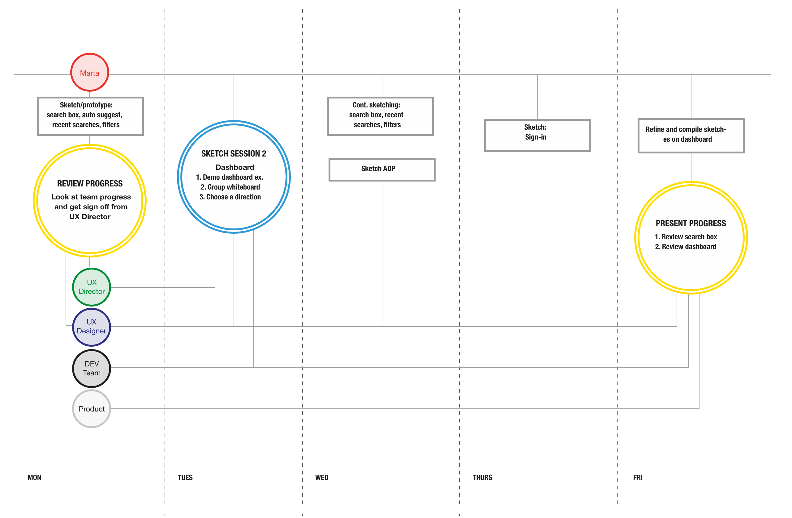

iStock iPad App
UX Design . Agile . DEV-Design pairing . 2013
Getty Images is the industry leader in stock photography with many sub brands and products under its umbrella. While a designer on the mobile team, I was tasked with leading the UX design effort for the new iStock iPad App, one of the key sub brands of Getty Images. I helped shape the final feature set and product roadmap, and brought engineering and product into the design process via weekly work sessions. I also partnered with a visual designer to apply a visual language.
The challenge
Before kicking off the project I worked with a researcher to gather data from the current iStock iPhone app. We collaborated on writing, conducting and analyzing a survey to further map user preferences and desires. We discovered that users prefer to browse and collect images on a tablet, and established search, save, and share as the primary goals for the new tablet app.
After gathering research I set up work sessions for design and engineering to collaborate on the app hierarchy, features, and primary workflows. We experimented with working in low fidelity in order to work faster and looser.
Design roadmap
I created a design roadmap for stakeholders to track progress and set up checkpoints with the director of UX, engineering, and product management.
 



Early design stages
After each work session with engineering and product, I mapped out and refined the design concepts explored.
 Mapping out primary workflows
Mapping out primary workflows
Understanding content
A main component of the iPad app was a home experience that would suggest content categories and help the user pick up where they left off. It helped serve the browse-only experience and provided customization options. I brainstormed with stakeholders to analyze what type of content to surface and where to place it in the layout.
Signed in users could see account credits, recent searches, and saved images.
Signed out users could see featured images from the iStock collection, most popular searches, and curated collections.
Mapping out edge cases
User workflows were necessary to illustrate edge cases and indicate how to move from A to B.
Final designs
I teamed up with a visual designer to apply the final visual language, maintaining the iStock brand. My focus was on polishing the search experience and its tools.